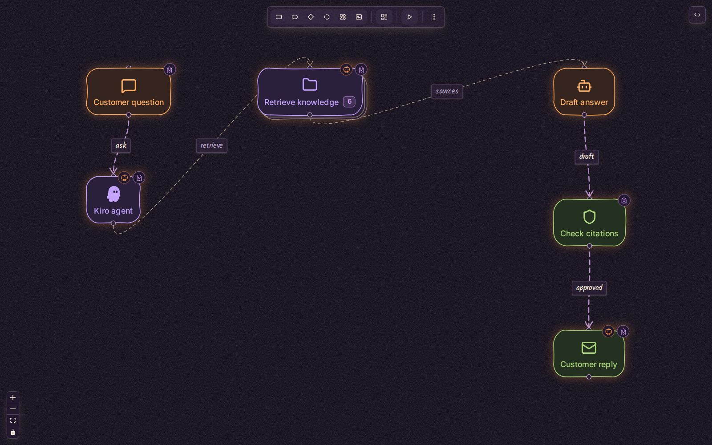
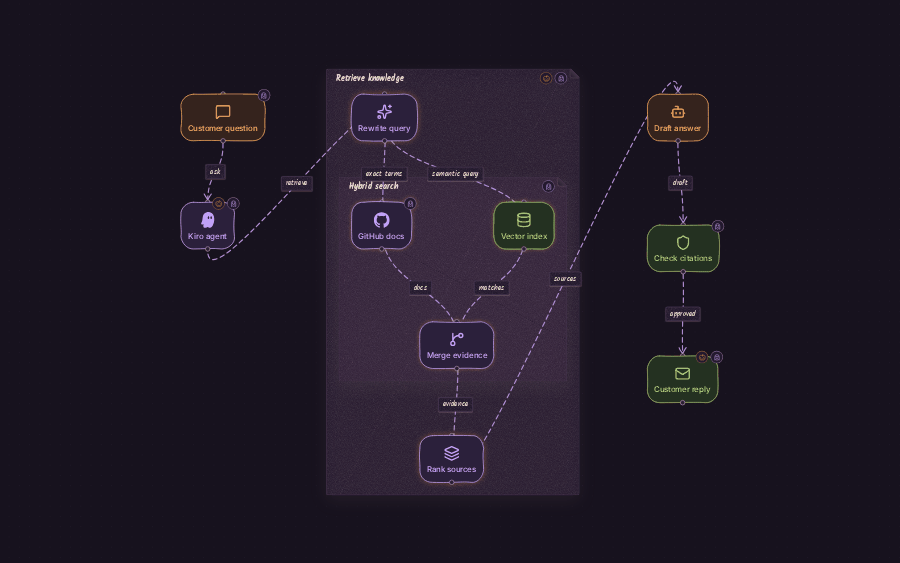
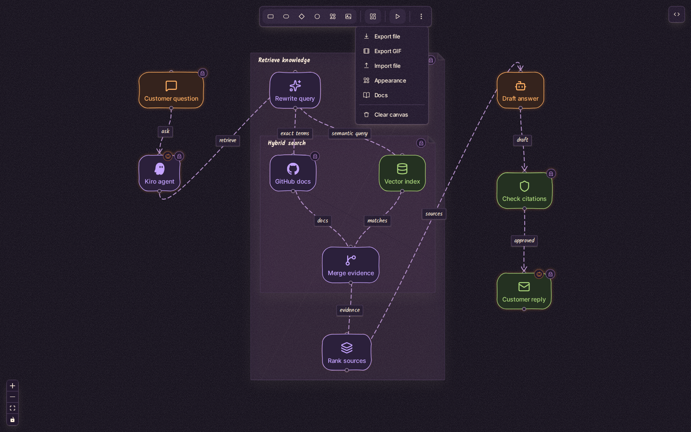

Marmerlade / Product capturesExplore the system. Keep the context.
A Halloween support workflow with animated Kiro, GitHub, and common system icons. Each use case has its own captures.
01Drill into three levels of detail
Open retrieval, unfold its search paths, and fold back to the overview.

Switch levels to inspect each layout.The complete drill-down and drill-up interaction.02Follow the diagram into its wiki
Open Kiro's design notes and switch to the second page attached to the same node.
03Open the linked slide deck
Keep the architecture beside the deck, then open the slides in their own window.
04Export the animated canvas
The GIF below is the file downloaded by the app's Export GIF action.

The app's exported diagram. Native node and connection animations loop.
The real export action.